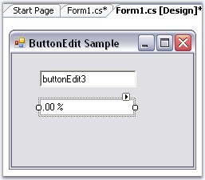
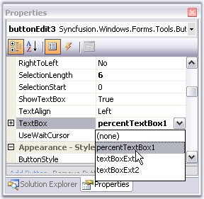
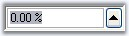
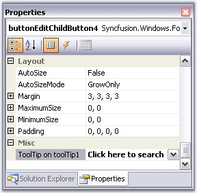
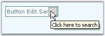

This section illustrates the solutions for various task-based queries about the control.
By calling the ButtonEdit.HideButton method, we can hide a child button.
|
Method |
Description |
|
HideButton |
Indicates whether a child button is hidden or visible. The parameters are,
btnIndex - Specifies the index of the button. visible - Specifies the visibility of the button. It can be true or false. If true, the button will be visible and if false, the button will not be visible. |
|
[C#]
this.buttonEdit1.HideButton(0, false); |
|
[VB.NET]
Me.buttonEdit1.HideButton(0, False) |
We can replace the default TextBox of the ButtonEdit control with other TextBox by doing the following steps.
1. Drag a ButtonEdit control and a PercentTextBox control that you would like to replace with the default TextBox of the ButtonEdit control.

Figure 180: ButtonEdit and PercentTextBox Controls
2. From the property window of ButtonEdit, select the PercentTextBox to be the TextBox control of the ButtonEdit control as shown below.

Figure 181: Associating PercentTextBox to the ButtonEdit Control
3. From the same properties window, you can set the percent properties for the ButtonEdit control.

Figure 182: ButtonEditControl with PercentTextBox Control
To set tooltip for a child button in a ButtonEdit control, drag and drop a ToolTip control from the toolbox. Text for tooltip is set using the extender property of the particular child button.

Figure 183: Setting ToolTip Text
We can also set the Tooltip for ButtonEdit control programmatically using its SetToolTip() method.
|
[C#]
this.toolTip1.SetToolTip(this.buttonEdit1, "Click here to search"); |
|
[VB.NET]
Me.toolTip1.SetToolTip(Me.buttonEdit1, "Click here to search") |

Figure 184: ToolTip set by using the SetToolTip Method